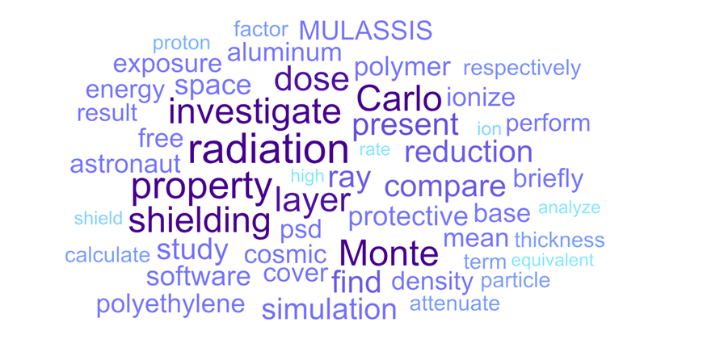
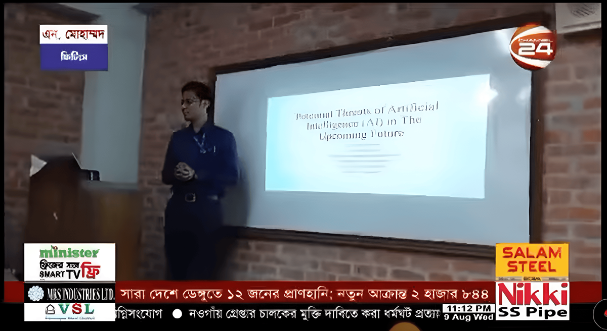
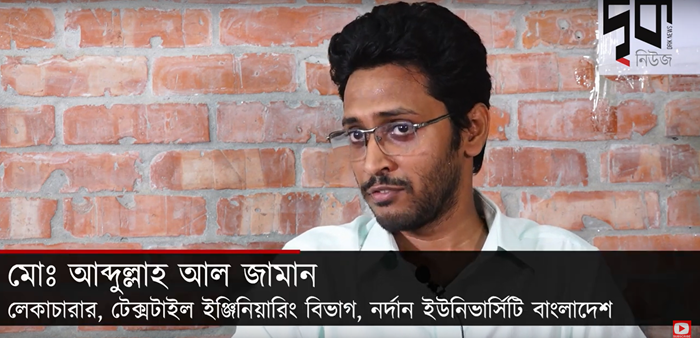
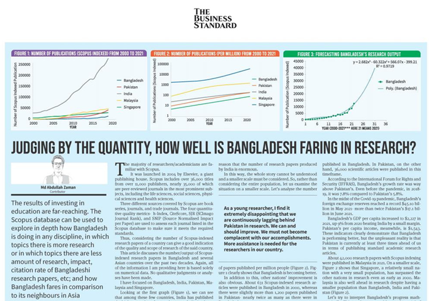
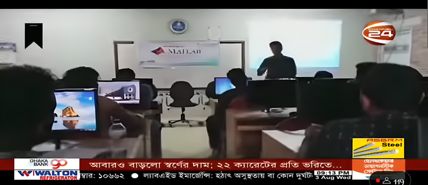
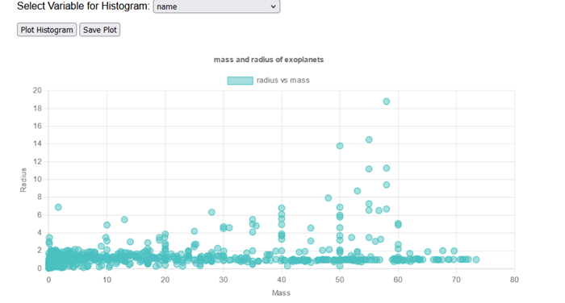
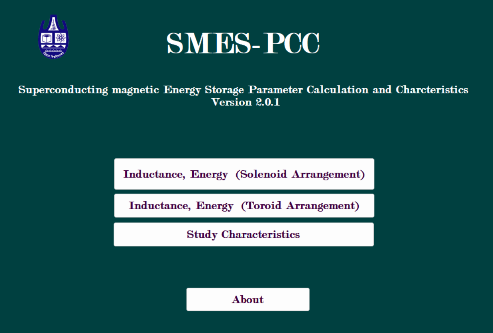
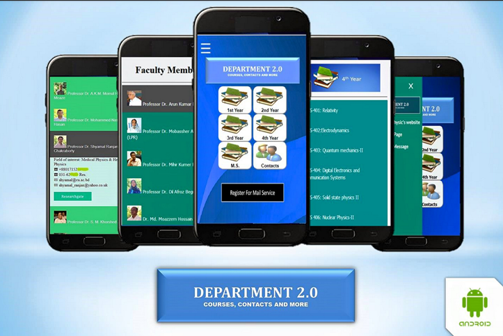
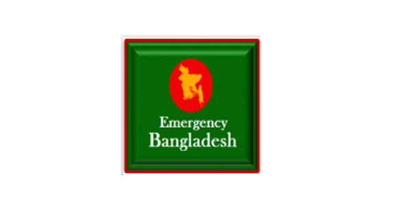

.jpg)
Md. Abdullah Al Zaman
Graduate Student
Graduate Student
Hi, I'm Md. Abdullah Al Zaman (Bengali Nickname: Proyash (প্রয়াস), meaning "Trying"). I am from Chattogram (formerly Chittagong), Bangladesh. Currently, I'm a Graduate Student in the Department of Physics and Astronomy at the University of Kansas। I am working with ExoLab led by Prof. Dr. Ian J. M. Crossfield on exoplanet research. Prior to this, I served as a Senior Lecturer and Lecturer in Physics at Northern University Bangladesh (NUB), Dhaka. I completed my B. Sc. and M. S. degrees in Physics from the University of Chittagong, Bangladesh. I'm passionate about studying Physics and Astronomy, along with recent technologies. In my free time, I enjoy writing, watching Sci-Fi and Superhero movies/series, reading books, and cooking.
My current research focuses on areas like Astronomical Data Analysis, exoplanet detection, Parameters relevant to exoplanets, galaxy formation/morphology/Star Formation Rate/SED and so on. For the last 4-5 years My work has been revolving around Space radiation, Space Safety, designing effective radiation shields for space missions. I used tools such as GEANT4, OLTARIS, SPENVIS, SRIM, NSRL, X-COM, PHY_X/PSD, and MATLAB. Here is a Concept cloud of my research from Science Explorer (NASA) for the last few years, its not acurate but you will get some idea for sure
| Seminar on Impact of Artificial Intelligence on Education and Industries, 31st July 2023 on Channel 24, also published in Somoy TV online |

|
| About Predatory Journals and their consequences on Drik News |

|
| My Article about number of research publications from Bangladesh over the years, Published inThe Business Standard |

|
| Workshop on MATLAB, 31st July 2022 on Channel 24, also published in Somoy TV online |

|
Actually, I have lost most of my codes. The followings are some of the tools that I have programmed/Developed over the years
| The CSV Plotter tool collects all the headers/variables from a CSV file (That you have uploaded) and can generate Scatter plot and HistogramClick here |

|
| For my Master's Thesis I developed 'SMES-PCC' which stands for Superconducting magnetic energy storage(SMES) parameter calculation and characteristics. It is programmed/Developed for both the solenoid and toroid configuration. This program is developed in Microsoft visual Studio 2010.This program is also capable of showing relationship between several parameters. Download the .exe file from here Also you can read the paper describing the equations,flowchart and UI for this software from here |

|
| Department 2.0 is an Androids app.It was developed in 2015-2016 using Apache Cordova. Used and loved by many students of Department of Physics at the University of Chittagong, Bangladesh. Download the .apk file from here. It will not work in current versions of Androids probably. It contains the entire syllabus (1st year to Masters) of the Department, contact no of the Faculty members, library assistance and much more. After I left University of Chittagong, Some of my juniors have developed a better version of this which is available on Google Playstore |

|
| Emergency Bangladesh is/was an android app containing most of the Emergency contact information (like Hospitals, Police Station, FireService, Ambulance), Maps, Blood Donors etc. in Bangladesh upto 2017. It was selected as one of the top 30 apps (out of 500) in EATL Prothom Alo Apps Challenge 2016, lead sponsor: The World Bank, Supported by :Canda Government and ICT division,Bangladesh. The EATL appstore is still showing this app but the source file (.apk) is not available. Also probably it will not run in most of the android smartphones as I did not update the version |

|
Download my CV here.